| قسمة خميس العهد |
|
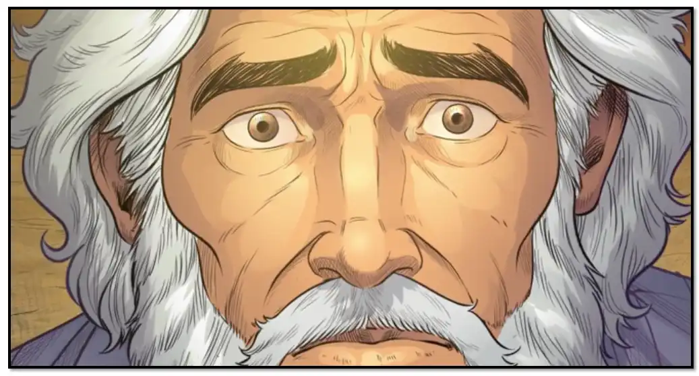 وحدث في الأيام التي أراد الله فيها أن يجرب إبراهيم ويعلم قلبه ومحبته فيه ، إنه قال له " " إبراهيم يا إبراهيم ، خذ ابنك وحيدك إسحق الذى تحبه وقدمه لي محرقة على الجبل الذي أعلمك به "
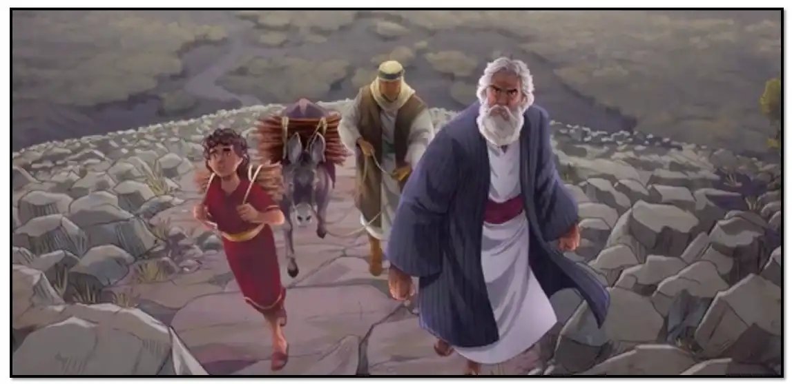 فقام إبراهيم ليلا ولم تشعر به ساره فتمنعه من انجاز امر الرب وأسرج دابته ، وأخذ نارا وحجرا وسكينا واثنين من غلمانيه وإسحق إبنه ،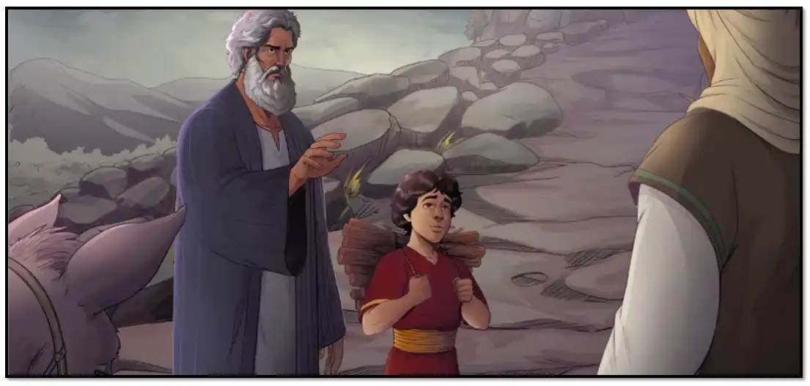 فرأي الموضع من بعيد ، فقال لغلاميه " أجلسا أنتما ههنا عند الدابة ، وأما أنا وابني اسحق فنذهب ونسجد ثم نرجع إليكما. "
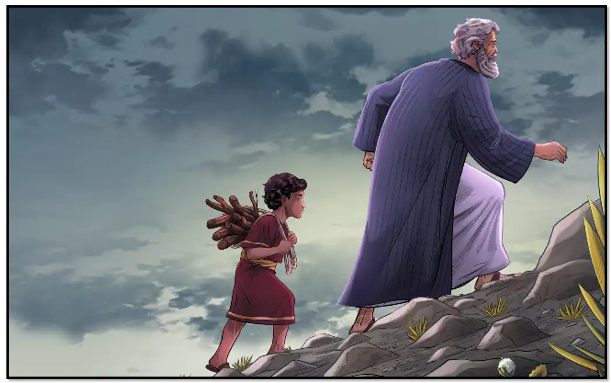 وانزل ابراهيم اسحق ابنه من على الدابة وأخذ النار والحطب ووضعهما على عنقيه ثم حلت به الافكار شأن كل انسان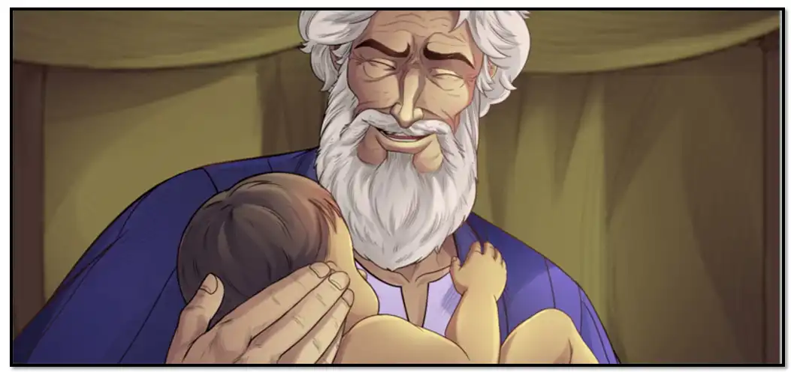 فقال في نفسه " الهذا السبب ولدتك يا ولدى ؟ ... لقد كنا عائشين بدونك وكان لنا حزن ... فاذا جئت وذهبت فكم يكون حزننا ... فقلت انه انقضت اتعابى ولم يعديبقى لى سوى ان اموت بسلام ... ولكن كانت اعظم تجربة باقية امامي يا ولدى ...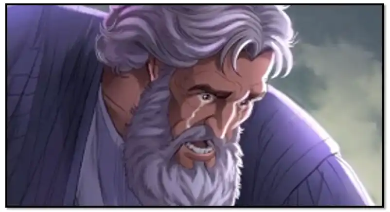 لو كنت مت موتا طبيعيا لكان حزنى مؤلما عليا ... ولكن لم يكن معذرة فى هذه القساوة عليك وذبحك وتقطيعك وتحويلك الى رماد. وانا الكائن ابوك الذى اذبحك واقطعك واحقك ... يا ولدى،
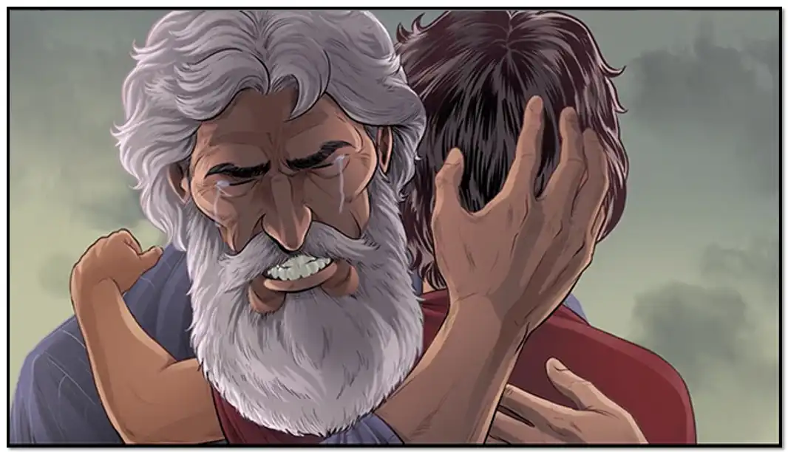 " وماذا اقول لامك سارة ... التى اخذتك منها خفية وتنتظر ان تراك بعد الغيبة وهي الان تتقلب عل جمر من النار وتفتح يديها لتضمك لصدرها الحنون ولا ترانى اننى وحدى بدونك، فكيف يكون حالى يا ربى ،
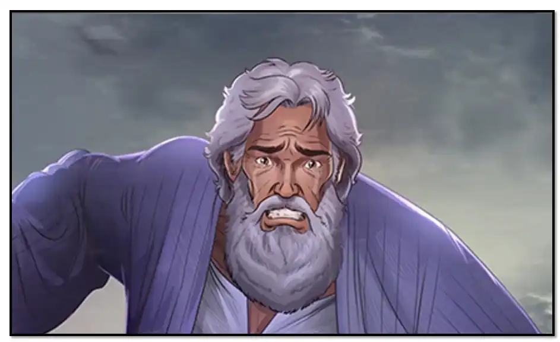 " وماذا يقول الناس عنى فى مستقبل الايام ... انهم يقولوا انى مخلوق بلا قلب لاني تجاسرت وذبحت ابنى ياليتك يا ولدى مت موتا طبيعا ولم تتلوث يداي بدمائك وانا في سن الشيخوخة وما ينفذ الوعد القائل ، انى بنسلك تتبارك جميع قبائل الارض،...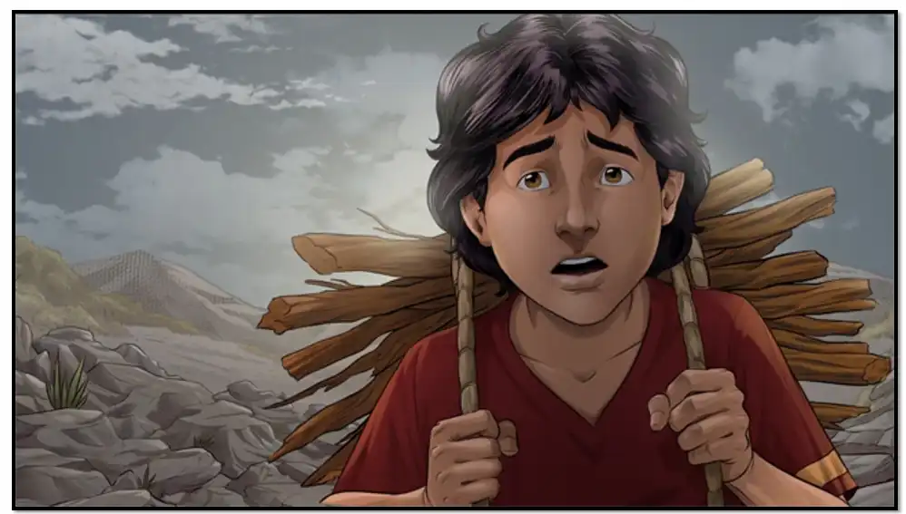 وكيف اذا سألنى ابنى الى اين اذهب يا أبتي؟ او اين الخروف الذى نقدمه للمحرقة؟ ... فماذا اقول يا ربي؟وبينما ابراهيم مفكرا في هذه الامور اذ بالذي خائف منه يقع فيه اذ ساله اسحاق سؤال قطع احشائه قائلا " يا أبتي ها هي النار .. ,ها هو الحطب ... وتلك هى السكين ... وأين الخروف الذي نقدمه للمحرقة يا ابى؟
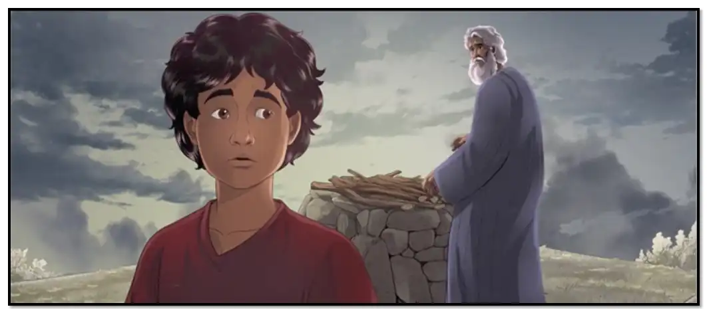 فقال إبراهيم لابنه اسحاق: " وهل نطيع امر الله ام نخالف وصيته " فقال اسحاق " طاعة الله امر واجب " فقال له " اذا فانت هو المحرقة ... يا ولدى "
وبينما كان ابراهيم سائرا اذا قابله الاصحاب والجيران قائلين " الى انت ذاهب يا ابراهيم؟ انت ذاهب لتزوج ابنك من بنات الكنعانين او لتتنزه في الرياض والبساتين، " فلم يجبهم الا بدموع تتساقط على خداهيه .. " اواه يا ولدى "
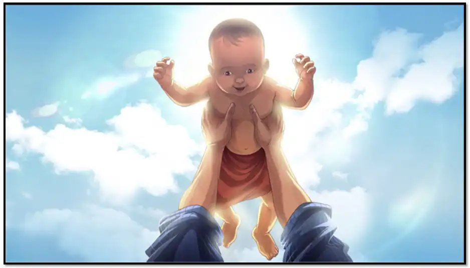 " الأجل هذا حصلت عليك بوعد خصومى؟ ودعتك امك بابن الفرح ولكنك ابن الحزن ... فلماذا يا الهى لم تطلب منى كل ما املك عوضا عنه، ياليتنى استطيع ان افديك بدمى "
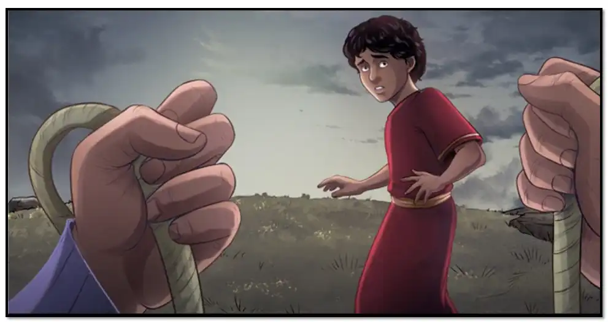 ولما وصل المكان أخذ ابراهيم حجارة وبنى مذبحا للرب وكتف يدي ابنه اسحاق ورجليه ووضعه عل المذبح .
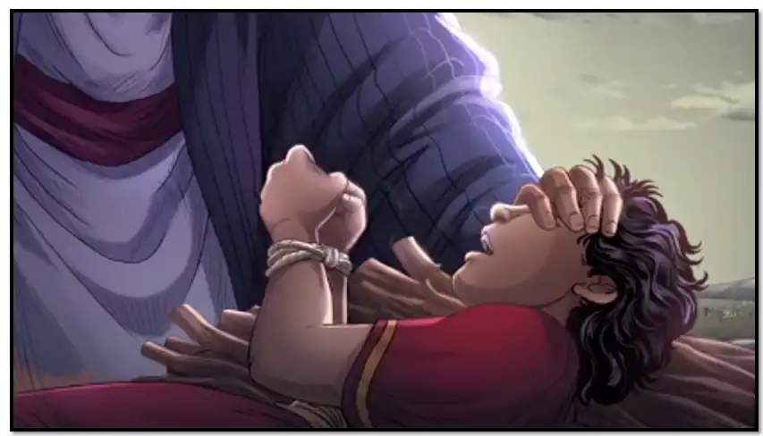 فقال اسحاق لابيه " يا ابتى اتذبحنى فى ارض غريبة ... وان كان لابد من الذبح ... فدعنى ان اقبل امى سارة لانها لم ترانى وانا معاك لـ ألا تموت حزنا على ... وانا الان مشتاق اليها ... والا عند رجوعك اقراها سلامى وقل لها اسحاق مات ... وهو مشتاق اليك "
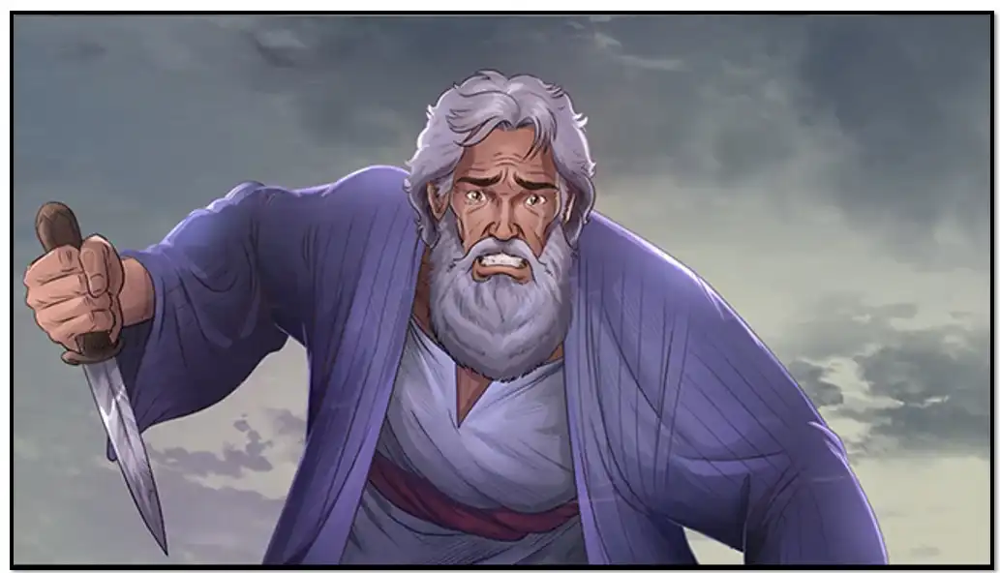 فابراهيم رجل الايمان لم تمنعه هذه الاقوال التى كانت تمزق احشائه بل امن بالله فحسب له برا وأخذ السكين ليذبح ابنه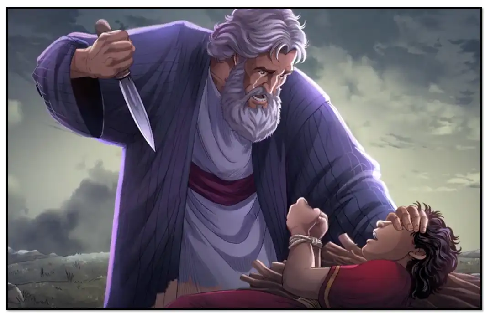 واذ ملاك الرب صرخ قائلا: " إبراهم يا إبراهيم، أنظر لا تلمس فتاك ولا تصنع به شرا ... من حيث راى الرب محبتك فيه قال: انى أنا هو الرب إلهك لانك لم تشفق على وحيدك من اجلى ... أقسمت بذاتي إنى بالبركة أباركك ... وبالكثرة أكثر نسلك كنجوم السماء ورمل البحر "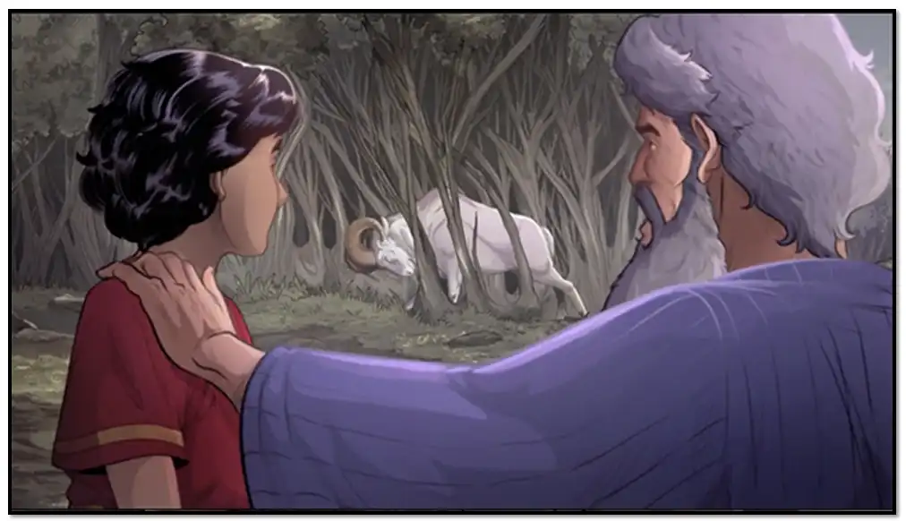 ... فحول ابراهيم بصره نحو الصوت فراى خروفا موثقا بقرنيه،فحل ابنه وذبح الخروف عوضا عنه ...
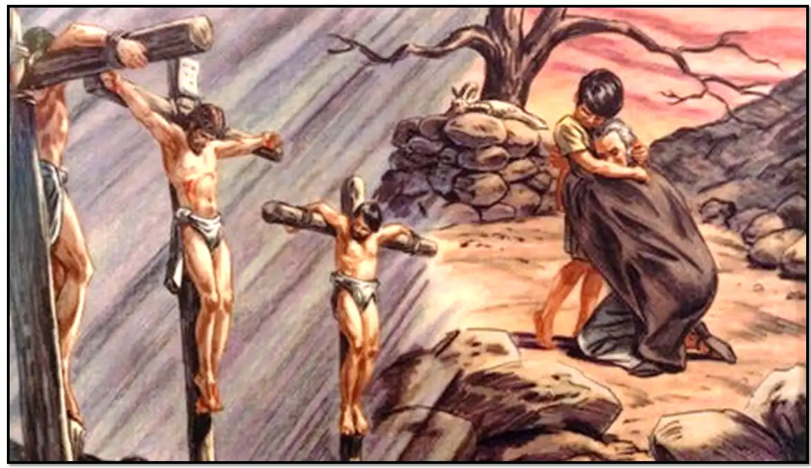 وكما ناب الخروف عن اسحق كذلك ناب المسيح عنا على عود الصليب،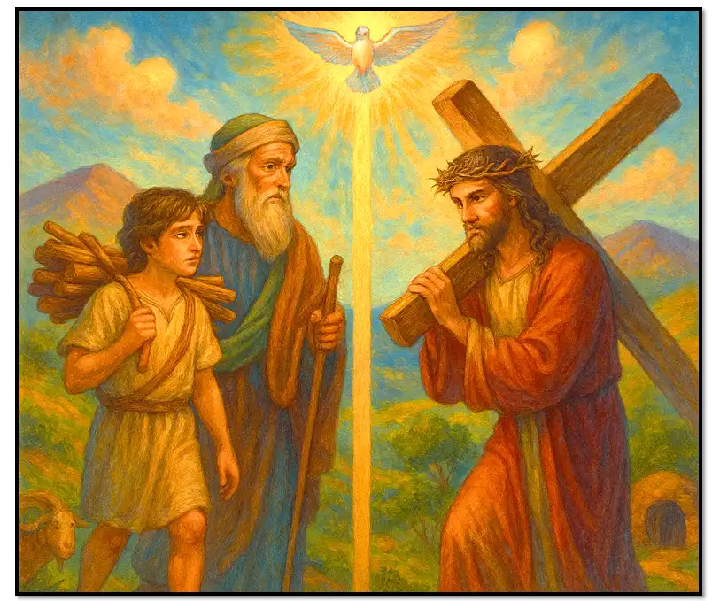 وكما حمل اسحق حطب المحرقة هكذا حمل مخلصنا خشبة الصليب التى صلب عليه، وكما قضى اسحاق متغربا عن امه ثلاثة ايام هكذا ايضا قضى مخلصنا فى القبر ثلاثة ايام،
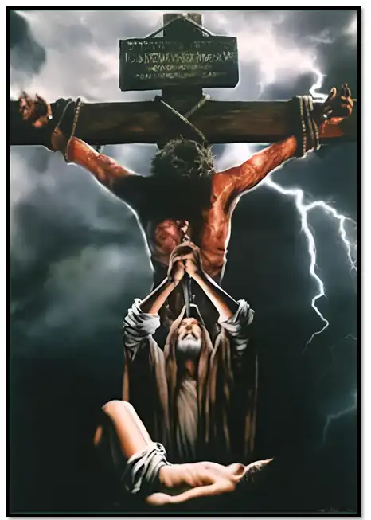 يا الله الذى قبل اليه ذبيحة أبينا إواهم إقبل منا نحن ايضا هذه الذبيحة في هذه الساعة، بارك الذن قدموها والذين قدمت عنهم، ومن اجل هذا نسالك يا سيدنا طهرنا من كل خطية واسمعنا عندنا نصرخ اليك ... |